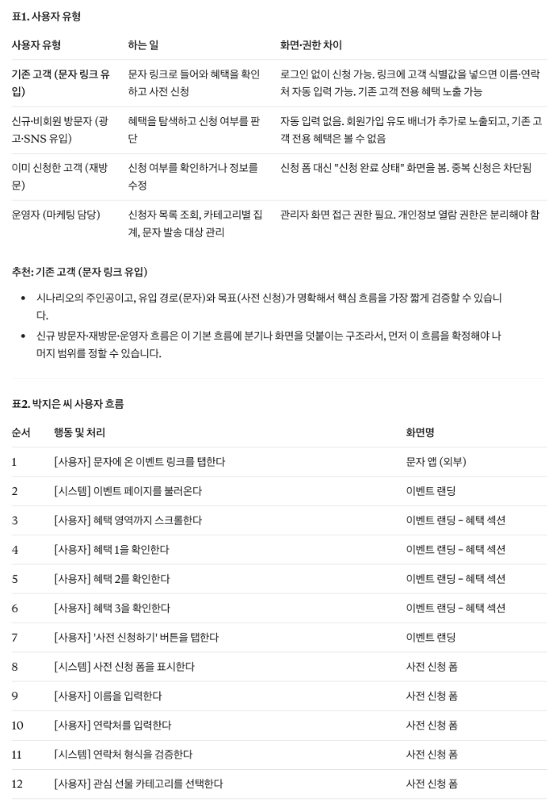
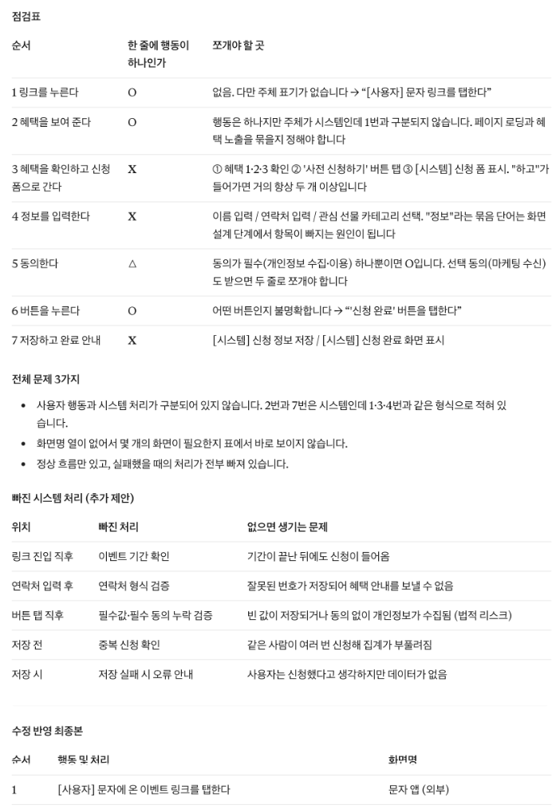
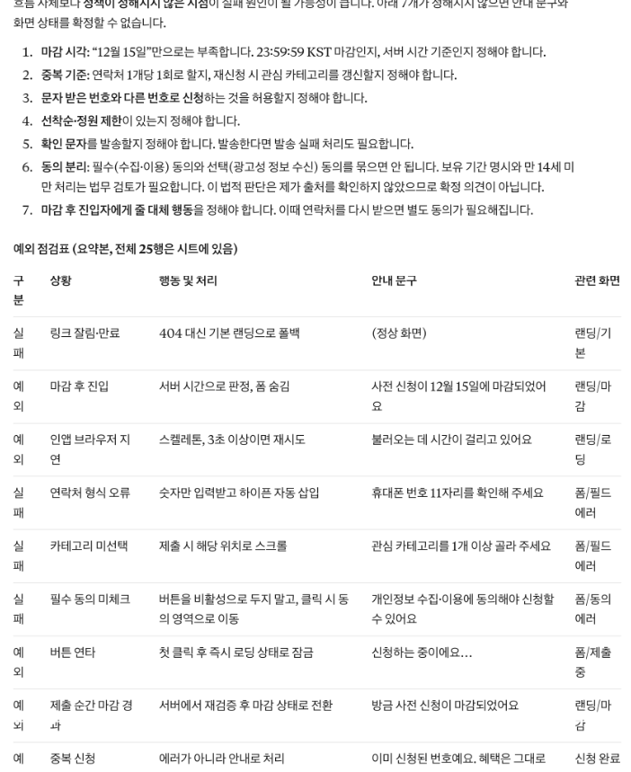
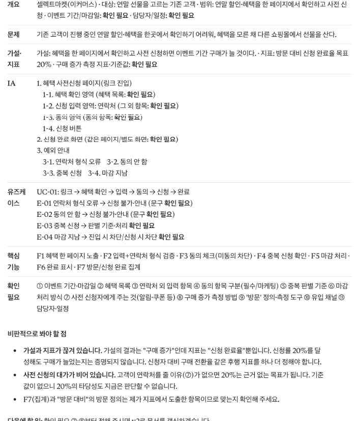
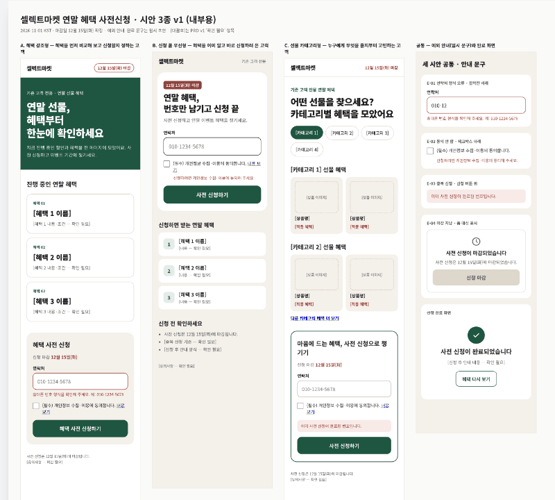
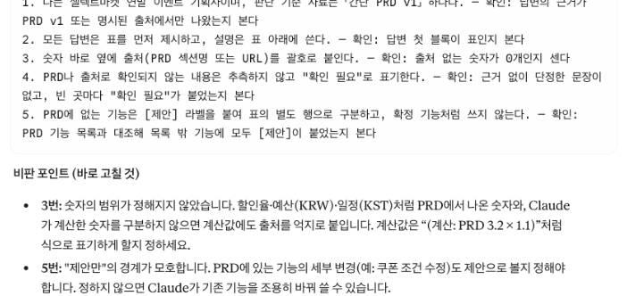
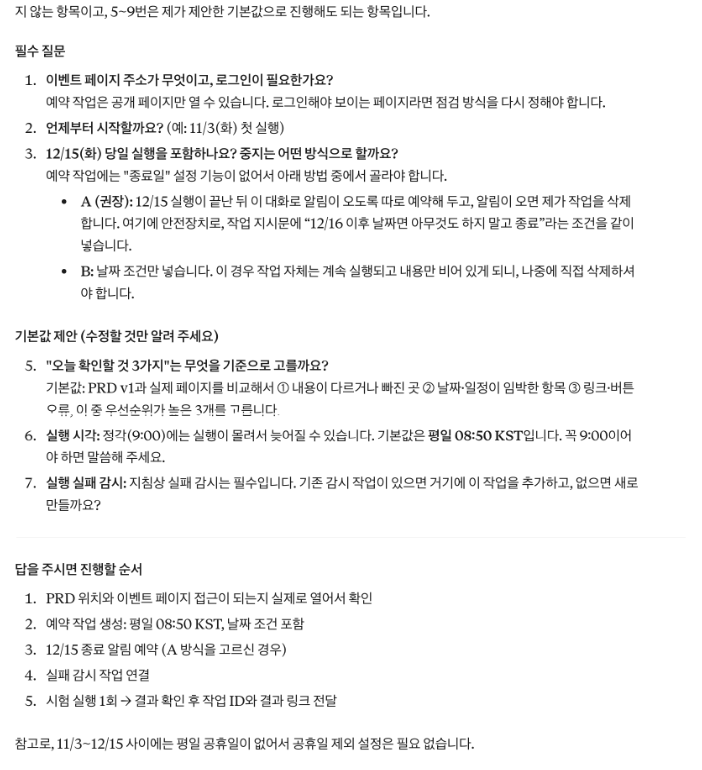
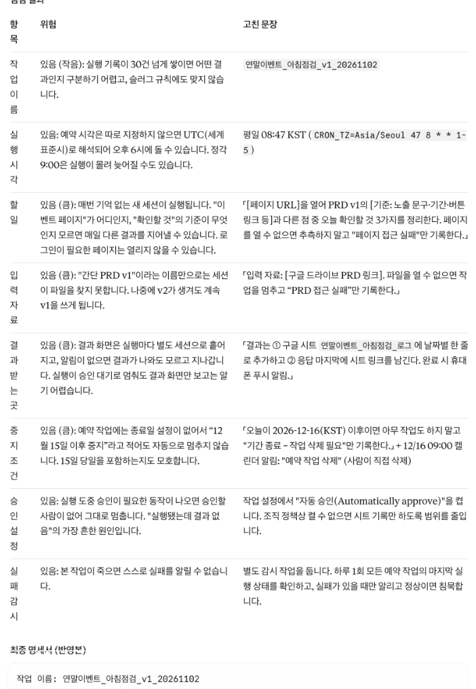
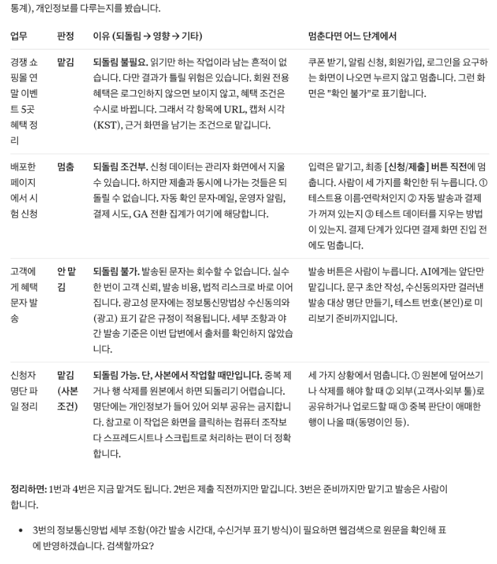

화면이 어떻게 쓰일지 설계하고, 클로드에게 맥락을 기억시켜요
어제의 문제정의서에 '누가, 어떤 순서로, 어디서 막히는지'를 더해 간단한 기획서(PRD)를 완성해요. 그 기획서로 클로드 디자인에서 시안을 비교하고, 프로젝트·지침·메모리·예약 작업으로 매번 처음부터 설명하지 않는 방법을 익혀요.
교육 개요
| 시간 | 09:00–18:00 (점심 12:00–13:00, 수업 8시간) |
|---|---|
| 교과 | [기본] AI 서비스 개발 · 3일차 (총 18일) |
| 교육 목표 | 사용자 유형·유즈케이스 시나리오·예외 상황·IA를 정리해 간단 PRD를 만들고, 그 PRD를 클로드의 디자인·프로젝트·지침·메모리·예약 기능에 연결할 수 있다. |
| 세션마다 같은 순서 | 개념 → 예시 → 실습 템플릿 → 프롬프트로 시작하기 → 점검·피드백 → 실패 케이스 → 결과 만들기 |
| 수업이 끝나면 | ① 사용자 유형을 나누고 이번에 집중할 사용자를 고른다 ② 시나리오를 한 줄에 하나씩 사용자 흐름 표로 쪼갠다 ③ 성공·실패·예외 상황과 안내 문구를 정한다 ④ IA와 간단 PRD를 한 장으로 만든다 ⑤ PRD로 시안을 비교하고, 지침·예약 작업을 설정한다 |
수업 전 준비
- 어제 문제정의서: 문제 정의·5 Whys·가설·지표가 들어 있는 문서를 열어 두세요.
- 어제 아티팩트: 이벤트 페이지 v2 대화를 열어 두세요.
- 요금제 확인: 클로드 디자인·예약 작업·크롬 연결은 요금제에 따라 쓸 수 있는 범위가 달라요.
① 개념을 짧게 보고 ② 이커머스 셀렉트마켓으로 채운 예시를 봐요. ③ 빈 템플릿을 내 내용으로 채우고 ④ 같은 일을 프롬프트로 AI에게 시켜 봐요. ⑤ 결과를 점검 프롬프트로 피드백받고 ⑥ 일부러 실패해 본 뒤 ⑦ 오늘의 결과물로 남겨요. 프롬프트는 요청 / 내용 / 형식 3줄로 쓰고, 바꿔 넣을 자리는 [ ]로 표시했어요.
타임테이블
| 시간 | 구분 | 내용 |
|---|---|---|
| 09:00–09:20 | 오늘의 단어 | 오늘의 단어 |
| 09:20–10:30 | SESSION 1 | 사용자 유형과 유즈케이스 시나리오 |
| 10:30–11:20 | SESSION 2 | 성공·실패·예외 시나리오 |
| 11:20–12:00 | SESSION 3 | IA와 간단 PRD 한 장 |
| 12:00–13:00 | 점심 | |
| 13:00–14:20 | SESSION 4 | PRD로 클로드 디자인 시안 3개 비교 |
| 14:20–15:30 | SESSION 5 | 프로젝트와 지침: 매번 설명하지 않기 |
| 15:30–16:30 | SESSION 6 | 메모리와 예약 작업 |
| 16:30–17:30 | SESSION 7 | 클로드 인 크롬·컴퓨터 유즈: 맡길 일 고르기 |
| 17:30–18:00 | 정리 | 오늘 정리와 과제 |
오늘의 단어
오늘 처음 나오는 말을 먼저 짧게 짚고 시작해요. 수업 중에 다시 나오면 이 표로 돌아와요.
| 단어 | 뜻 |
|---|---|
| 사용자 유형 | 같은 서비스 안에서 하는 일과 권한이 다른 사람들(비회원·회원·운영자 등) |
| 유즈케이스 시나리오 | 사용자가 서비스를 쓰는 장면을 이야기로 쓴 것 |
| 사용자 흐름 | 시나리오를 한 줄에 행동 하나씩 쪼갠 표 |
| 예외 상황 | 정상 흐름에서 벗어난 경우. 새 화면보다 같은 화면의 다른 상태로 보여 줘요 |
| IA | 화면과 메뉴의 위계를 정리한 구조도 |
| PRD | 문제부터 화면까지 한 장에 모은 요구사항 기획서 |
| 지침 | 프로젝트 안의 모든 대화에 매번 적용되는 규칙 |
사용자 유형과 유즈케이스 시나리오
개념1-1. 개념
많은 초보 기획자가 사용자를 한 명으로만 생각하고 시나리오를 써요. 실제로는 같은 서비스 안에 하는 일이 다른 사용자가 섞여 있어요. 먼저 사용자 유형을 나누고 이번에 집중할 한 유형을 고른 뒤, 그 사람의 시나리오를 '한 줄에 행동 하나'로 쪼개요. 잘게 나눌수록 AI가 화면이나 동작을 빠뜨리지 않아요.
출처: 김수정, 「AI 프로토타입으로 배우는 데이터 서비스기획」 3.6.1 사용자 정의 · 3.6.2 유즈케이스 시나리오
예시1-2. 채워진 예시
이커머스 셀렉트마켓 연말 이벤트의 시나리오와 사용자 흐름 예시예요. 시나리오: 기존 고객 박지은 씨는 문자에 온 링크로 이벤트 페이지에 들어와 연말 혜택 3가지를 확인하고, 이름·연락처·관심 선물 카테고리를 입력해 사전 신청을 마친다.
| 순서 | 행동 및 처리 | 화면명 |
|---|---|---|
| 1 | 사용자가 문자 속 링크를 누른다 | 이벤트 페이지 |
| 2 | 시스템이 이벤트 소개와 혜택 3가지를 보여 준다 | 이벤트 페이지 |
| 3 | 사용자가 혜택을 확인하고 신청 폼으로 내려간다 | 이벤트 페이지 · 신청 폼 |
| 4 | 사용자가 이름·연락처·관심 카테고리를 입력한다 | 신청 폼 |
| 5 | 사용자가 개인정보 수집에 동의한다 | 신청 폼 |
| 6 | 사용자가 '사전 신청' 버튼을 누른다 | 신청 폼 |
| 7 | 시스템이 신청을 저장하고 완료 안내를 보여 준다 | 신청 완료 |
실습 템플릿1-3. 실습 템플릿
예시를 보고 빈칸을 내 내용으로 채워요. 손으로 다 채우지 못해도 괜찮아요. 다음 단계에서 AI로 채우는 방법을 연습해요.
| 순서 | 행동 및 처리 | 화면명 |
|---|---|---|
| 1 | ||
| 2 | ||
| 3 | ||
| 4 | ||
| 5 | ||
| 6 | ||
| 7 |
순서 | 행동 및 처리 | 화면명 1 | | 2 | | 3 | | 4 | | 5 | | 6 | | 7 | |
프롬프트로 시작하기1-4. 프롬프트로 시작하기
템플릿을 손으로 채우는 대신 AI에게 초안을 받아요. [ ] 안은 이커머스 셀렉트마켓 예시 값이에요. 내 내용으로 바꿔 써요.
요청: 이 서비스의 사용자 유형을 나누고, 이번 프로토타입에서 집중할 유형을 추천해 줘. 그다음 그 사용자의 시나리오를 사용자 흐름 표로 쪼개 줘 내용: 서비스: [이커머스 셀렉트마켓 연말 이벤트 사전 신청 페이지] / 시나리오: [기존 고객 박지은 씨는 문자에 온 링크로 이벤트 페이지에 들어와 연말 혜택 3가지를 확인하고, 이름·연락처·관심 선물 카테고리를 입력해 사전 신청을 마친다] 형식: 표1(사용자 유형 / 하는 일 / 화면·권한 차이) + 추천 이유 2줄 + 표2(순서 / 행동 및 처리 / 화면명). 표2는 한 줄에 행동 하나만

점검·피드백1-5. 점검·피드백
AI가 만든 초안이나 내가 채운 템플릿을 그대로 쓰지 않고, 기준을 주고 점검받아요. 칭찬 말고 고칠 점을 받는 게 목적이에요.
요청: 내 사용자 흐름 표를 점검해 줘 내용: 흐름: [1 링크를 누른다 / 2 혜택을 보여 준다 / 3 혜택을 확인하고 신청 폼으로 간다 / 4 정보를 입력한다 / 5 동의한다 / 6 버튼을 누른다 / 7 저장하고 완료 안내] 형식: 표(순서 / 한 줄에 행동이 하나인가 O·X / 쪼개야 할 곳). 빠진 시스템 처리가 있으면 추가 제안

실패 케이스1-6. 실패 케이스 만들어 보기
일부러 틀리게 해 보고, 결과가 어떻게 달라지는지 확인해요.
| 만들어 볼 실패 | 이렇게 해 봐요 | 무엇이 보이고, 어떻게 풀까 |
|---|---|---|
| 한 줄에 행동 두 개 | '정보를 입력하고 신청한다'를 한 줄로 써서 점검해 봐요. | AI가 쪼개라고 해요. 입력과 버튼 누르기 사이에 '동의' 같은 단계가 숨어 있었어요. |
| 사용자 유형 하나만 | 운영자(이벤트 담당자)를 빼고 진행해 봐요. | 신청 내역을 누가 어디서 보는지가 빠져요. 오후 PRD에서 운영자 화면이 비어요. |
결과 만들기1-7. 결과 만들기
이렇게 보이면 성공표의 모든 줄에 행동이 하나씩만 있다
성공·실패·예외 시나리오
개념2-1. 개념
성공 흐름만 정의하면 실제 사용 중 생기는 문제를 놓쳐요. 실패와 예외까지 정해야 사용자가 정상 흐름으로 돌아오는 길을 설계할 수 있어요. 실패·예외는 새 화면이 아니라 같은 화면의 다른 상태(오류 문구·빈 상태·로딩)로 보여 주는 경우가 많아요.
출처: 김수정, 「AI 프로토타입으로 배우는 데이터 서비스기획」 3.6.3 성공 시나리오와 예외 시나리오 · 5.2 STEP 2
예시2-2. 채워진 예시
이커머스 셀렉트마켓 사전 신청 폼의 예시예요. 안내 문구까지 정해 두면 어제 만든 수정 요청서에 그대로 옮길 수 있어요.
| 구분 | 상황 | 행동 및 처리 | 안내 문구 | 관련 화면 |
|---|---|---|---|---|
| 성공 | 필수 항목을 모두 입력 | 저장하고 완료 안내 | 사전 신청이 완료됐어요. 혜택 오픈 날 문자로 알려 드릴게요 | 신청 완료 |
| 실패 | 연락처 형식이 틀림 | 제출을 막고 해당 칸 표시 | 연락처를 010-0000-0000 형식으로 입력해 주세요 | 신청 폼 |
| 실패 | 개인정보 동의 안 함 | 제출을 막음 | 혜택 안내를 받으려면 동의가 필요해요 | 신청 폼 |
| 예외 | 같은 연락처로 다시 신청 | 저장하지 않고 안내 | 이미 신청하셨어요 | 신청 폼 |
| 예외 | 마감일(12월 15일) 지남 | 폼 대신 마감 안내 | 사전 신청이 마감됐어요 | 이벤트 페이지 |
실습 템플릿2-3. 실습 템플릿
예시를 보고 빈칸을 내 내용으로 채워요. 손으로 다 채우지 못해도 괜찮아요. 다음 단계에서 AI로 채우는 방법을 연습해요.
| 구분 | 상황 | 행동 및 처리 | 안내 문구 | 관련 화면 |
|---|---|---|---|---|
| 성공 | ||||
| 실패 | ||||
| 실패 | ||||
| 예외 | ||||
| 예외 |
구분 | 상황 | 행동 및 처리 | 안내 문구 | 관련 화면 성공 | | | | 실패 | | | | 실패 | | | | 예외 | | | | 예외 | | | |
프롬프트로 시작하기2-4. 프롬프트로 시작하기
템플릿을 손으로 채우는 대신 AI에게 초안을 받아요. [ ] 안은 이커머스 셀렉트마켓 예시 값이에요. 내 내용으로 바꿔 써요.
요청: 내 사용자 흐름에서 실패하거나 예외가 생길 수 있는 지점을 찾아 줘 내용: 흐름: [문자 링크로 들어와 혜택 확인 → 이름·연락처·관심 카테고리 입력 → 개인정보 동의 → 사전 신청 버튼 → 저장·완료 안내] / 마감일: [12월 15일] 형식: 표(구분 성공·실패·예외 / 상황 / 행동 및 처리 / 안내 문구 / 관련 화면). 새 화면보다 같은 화면의 다른 상태로 보여 줄 수 있는지 함께 제안

점검·피드백2-5. 점검·피드백
AI가 만든 초안이나 내가 채운 템플릿을 그대로 쓰지 않고, 기준을 주고 점검받아요. 칭찬 말고 고칠 점을 받는 게 목적이에요.
요청: 내 예외 시나리오 표에서 빠진 상황을 찾아 줘 내용: 표: [성공 1 / 연락처 형식 오류 / 동의 안 함 / 중복 신청 / 마감 지남] 형식: 빠진 상황 목록(중요한 순) + 각각 안내 문구 1개. 이번 프로토타입에서 꼭 다뤄야 하는 것만 표시
실패 케이스2-6. 실패 케이스 만들어 보기
일부러 틀리게 해 보고, 결과가 어떻게 달라지는지 확인해요.
| 만들어 볼 실패 | 이렇게 해 봐요 | 무엇이 보이고, 어떻게 풀까 |
|---|---|---|
| 성공만 쓰고 만들기 | 예외 표 없이 아티팩트에 '신청 폼 만들어 줘'만 요청해 봐요. | 빈칸으로 눌러도 '완료'가 떠요. 예외 표의 안내 문구를 수정 요청서로 넣어요. |
| 예외마다 새 화면 | '중복 신청 화면을 따로 만들어 줘'라고 해 봐요. | 페이지가 늘고 흐름이 끊겨요. 같은 폼 아래 문구로 바꿔 달라고 해요. |
결과 만들기2-7. 결과 만들기
이렇게 보이면 성공모든 줄에 안내 문구가 있다
IA와 간단 PRD 한 장
개념3-1. 개념
사용자 흐름의 화면명을 모아 중복을 지우면 필요한 화면 수와 위계가 보여요. 이것이 IA예요. 그리고 문제·가설·지표·IA·시나리오를 한 장에 모은 것이 간단 PRD예요. PRD 양식은 조직마다 다르지만, 문제부터 화면까지 논리가 끊기지 않고 이어지는지가 핵심이에요.
출처: 김수정, 「AI 프로토타입으로 배우는 데이터 서비스기획」 3.6.4 IA · 3.7 간단 요구사항 기획서
예시3-2. 채워진 예시
이커머스 셀렉트마켓 연말 이벤트 간단 PRD 예시예요. 아직 정하지 않은 것은 지어내지 않고 '확인 필요'로 남겨요.
| 항목 | 작성 내용 |
|---|---|
| 개요 | 연말 선물을 고르는 기존 고객이 혜택을 한곳에서 확인하고 사전 신청하는 페이지 |
| 문제 | 월요일 문제 정의 문장 |
| 가설·지표 | 월요일 가설 / 방문 대비 사전 신청 완료율, 목표 20% |
| IA | 고객: 이벤트 페이지(소개·혜택·신청 폼) → 신청 완료 / 운영자: 신청 목록(확인 필요) |
| 유즈케이스 | 성공 흐름 7단계 + 실패·예외 4가지 |
| 핵심 기능 | 혜택 보기, 사전 신청, 입력 검사, 중복 신청 막기, 마감 처리 |
| 확인 필요 | 신청 목록을 누가 어디서 보는지, 알림 문자 발송 방법 |
실습 템플릿3-3. 실습 템플릿
예시를 보고 빈칸을 내 내용으로 채워요. 손으로 다 채우지 못해도 괜찮아요. 다음 단계에서 AI로 채우는 방법을 연습해요.
| 항목 | 작성 내용 |
|---|---|
| 개요 | |
| 문제 | |
| 가설·지표 | |
| IA | |
| 유즈케이스 | |
| 핵심 기능 | |
| 확인 필요 |
항목 | 작성 내용 개요 | 문제 | 가설·지표 | IA | 유즈케이스 | 핵심 기능 | 확인 필요 |
프롬프트로 시작하기3-4. 프롬프트로 시작하기
템플릿을 손으로 채우는 대신 AI에게 초안을 받아요. [ ] 안은 이커머스 셀렉트마켓 예시 값이에요. 내 내용으로 바꿔 써요.
요청: 지금까지 정리한 내용을 간단 PRD 표 한 장으로 모아 줘. 내가 준 내용만으로 채우고, 빠진 정보는 지어내지 말고 '확인 필요'로 표시해 내용: 문제 정의: [연말 선물을 고르는 이커머스 셀렉트마켓 기존 고객은 진행 중인 연말 할인·혜택을 한곳에서 확인하기 어려워, 혜택을 모른 채 다른 쇼핑몰에서 선물을 사는 일을 겪는다.] / 가설·지표: [혜택을 한 페이지에서 확인하고 사전 신청하면 이벤트 기간 구매가 늘 것이다 · 방문 대비 신청 완료율 목표 20%] / 사용자 흐름: [링크 → 혜택 확인 → 입력 → 동의 → 신청 → 완료] / 예외: [연락처 형식 오류, 동의 안 함, 중복 신청, 마감 지남] 형식: 표(개요 / 문제 / 가설·지표 / IA / 유즈케이스 / 핵심 기능 / 확인 필요). IA는 계층으로

점검·피드백3-5. 점검·피드백
AI가 만든 초안이나 내가 채운 템플릿을 그대로 쓰지 않고, 기준을 주고 점검받아요. 칭찬 말고 고칠 점을 받는 게 목적이에요.
요청: 이 PRD를 개발자에게 넘긴다고 생각하고 논리가 끊기는 곳을 찾아 줘 내용: PRD: [방금 만든 표 붙여 넣기] 형식: 표(항목 / 앞 항목과 이어지나 O·△·X / 끊기는 이유). 칭찬은 빼고 고칠 점만
실패 케이스3-6. 실패 케이스 만들어 보기
일부러 틀리게 해 보고, 결과가 어떻게 달라지는지 확인해요.
| 만들어 볼 실패 | 이렇게 해 봐요 | 무엇이 보이고, 어떻게 풀까 |
|---|---|---|
| 빈칸을 AI가 채우게 두기 | '확인 필요로 표시해'를 빼고 PRD를 요청해 봐요. | 운영자 화면·알림 방식 같은 내용이 지어내져요. 내가 정한 적 없는 줄을 찾아 '확인 필요'로 바꿔요. |
| IA에 기능 이름 쓰기 | IA에 '중복 신청 막기'를 메뉴처럼 넣어 봐요. | 화면이 아닌 것이 메뉴가 돼요. IA에는 화면만, 기능은 '핵심 기능' 칸에 써요. |
결과 만들기3-7. 결과 만들기
이렇게 보이면 성공점검에서 X가 0개다
PRD로 클로드 디자인 시안 3개 비교
개념4-1. 개념
한 가지 결과만 보면 그게 정답처럼 보여요. 방향이 다른 시안을 나란히 보면 '왜 이게 낫다'를 말할 수 있어요. 고르는 기준은 취향이 아니라 PRD의 가설이에요. 시안 평가표로 '가설의 행동(혜택 확인 → 신청)을 하게 만드는가'를 점수로 매겨요.
예시4-2. 채워진 예시
시안 3개를 평가한 예시예요. 점수는 1~3점, 기준은 PRD에서 가져와요.
| 기준(PRD에서) | 시안 A 혜택 강조형 | 시안 B 신청 폼 우선형 | 시안 C 선물 카테고리형 |
|---|---|---|---|
| 혜택 3가지가 첫 화면에 보이나 | 3 | 1 | 2 |
| 신청까지 스크롤이 짧은가 | 2 | 3 | 2 |
| 예외 문구 자리가 있나 | 2 | 3 | 2 |
| 휴대폰에서 읽기 쉬운가 | 3 | 2 | 2 |
| 합계 · 선택 | 10 · 선택 | 9 | 8 |
실습 템플릿4-3. 실습 템플릿
예시를 보고 빈칸을 내 내용으로 채워요. 손으로 다 채우지 못해도 괜찮아요. 다음 단계에서 AI로 채우는 방법을 연습해요.
| 기준(PRD에서) | 시안 A | 시안 B | 시안 C |
|---|---|---|---|
| 합계 · 선택 |
기준(PRD에서) | 시안 A | 시안 B | 시안 C | | | | | | | | | | | | 합계 · 선택 | | |
프롬프트로 시작하기4-4. 프롬프트로 시작하기
템플릿을 손으로 채우는 대신 AI에게 초안을 받아요. [ ] 안은 이커머스 셀렉트마켓 예시 값이에요. 내 내용으로 바꿔 써요.
요청: 이 PRD로 연말 이벤트 사전 신청 페이지를 방향이 다른 시안 3개로 만들어 줘 내용: PRD: [간단 PRD v1 붙여 넣기] / 꼭 유지할 것: [신청 폼 항목, 마감일 12월 15일, 예외 안내 문구] / 시안 방향: [혜택 강조형, 신청 폼 우선형, 선물 카테고리형] 형식: 시안마다 어떤 사용자에게 맞는지 한 줄 설명

점검·피드백4-5. 점검·피드백
AI가 만든 초안이나 내가 채운 템플릿을 그대로 쓰지 않고, 기준을 주고 점검받아요. 칭찬 말고 고칠 점을 받는 게 목적이에요.
요청: 시안 3개를 PRD의 가설 기준으로 평가해 줘. 디자인 취향 말고 가설의 행동을 하게 만드는지만 봐 내용: 가설: [혜택을 한 페이지에서 확인하고 사전 신청하면 이벤트 기간 구매가 늘 것이다] / 기준: [혜택이 첫 화면에 보이나, 신청까지 짧은가, 예외 문구 자리, 휴대폰 가독성] 형식: 표(기준 / 시안 A·B·C 1~3점 / 근거) + 추천 1개와 그 시안에서 하나만 고칠 점
실패 케이스4-6. 실패 케이스 만들어 보기
일부러 틀리게 해 보고, 결과가 어떻게 달라지는지 확인해요.
| 만들어 볼 실패 | 이렇게 해 봐요 | 무엇이 보이고, 어떻게 풀까 |
|---|---|---|
| PRD 없이 시안 요청 | '시안 3개 만들어 줘'만 보내 봐요. | 색만 다른 비슷한 시안이 나와요. 방향(무엇을 우선하는지)을 PRD와 함께 줘요. |
| 취향으로 고르기 | 평가표 없이 '제일 예쁜 것'을 골라 봐요. | 왜 골랐는지 설명할 수 없어요. 평가표 점수로 다시 골라요. |
결과 만들기4-7. 결과 만들기
이렇게 보이면 성공고른 이유가 PRD 기준 점수로 설명된다
프로젝트와 지침: 매번 설명하지 않기
개념5-1. 개념
새 대화를 열 때마다 '나는 이커머스 셀렉트마켓 기획자이고…'를 다시 쓰면 결과가 들쭉날쭉해요. 프로젝트에 PRD를 자료로 넣고 지침을 써 두면 그 안의 모든 대화가 같은 규칙으로 시작해요. 지침은 '친절하게'처럼 확인할 수 없는 말이 아니라 결과로 확인할 수 있는 규칙이어야 해요.
예시5-2. 채워진 예시
이커머스 셀렉트마켓 연말 이벤트 프로젝트 지침 예시예요. 다섯 줄 모두 답변을 보고 지켰는지 확인할 수 있어요.
| 번호 | 지침 | 확인 방법 |
|---|---|---|
| 1 | 나는 이커머스 셀렉트마켓의 연말 이벤트 기획자다. 자료의 PRD를 기준으로 답한다 | 답에 PRD 항목 이름이 나온다 |
| 2 | 비교·정리는 표로 먼저 보여 준다 | 답 첫 부분이 표다 |
| 3 | 숫자 옆에는 출처를 쓰고, 모르면 '확인 필요'라고 쓴다 | 출처 없는 숫자가 없다 |
| 4 | PRD에 없는 기능은 제안으로만 쓰고 바로 만들지 않는다 | '제안' 표시가 있다 |
| 5 | 화면을 고칠 때는 바꾼 부분을 3줄로 요약한다 | 요약 3줄이 있다 |
실습 템플릿5-3. 실습 템플릿
예시를 보고 빈칸을 내 내용으로 채워요. 손으로 다 채우지 못해도 괜찮아요. 다음 단계에서 AI로 채우는 방법을 연습해요.
| 번호 | 지침 | 확인 방법 |
|---|---|---|
| 1 | ||
| 2 | ||
| 3 | ||
| 4 | ||
| 5 |
번호 | 지침 | 확인 방법 1 | | 2 | | 3 | | 4 | | 5 | |
프롬프트로 시작하기5-4. 프롬프트로 시작하기
템플릿을 손으로 채우는 대신 AI에게 초안을 받아요. [ ] 안은 이커머스 셀렉트마켓 예시 값이에요. 내 내용으로 바꿔 써요.
요청: 내 프로젝트 지침 초안을 써 줘 내용: 나: [이커머스 셀렉트마켓 연말 이벤트 기획자] / 자료: [간단 PRD v1] / 원하는 답변 규칙: [표 먼저, 숫자 옆에 출처, 모르면 확인 필요, PRD에 없는 기능은 제안만] 형식: 5줄 이내. 줄마다 결과로 확인할 수 있는 문장만 쓰고, 옆에 확인 방법을 붙여 줘

점검·피드백5-5. 점검·피드백
AI가 만든 초안이나 내가 채운 템플릿을 그대로 쓰지 않고, 기준을 주고 점검받아요. 칭찬 말고 고칠 점을 받는 게 목적이에요.
요청: 내 지침에서 확인할 수 없는 문장을 찾아 줘 내용: 지침: [위에서 쓴 5줄] 형식: 표(지침 / 확인 가능 O·X / 고친 문장). '친절하게', '자세히' 같은 말은 X
실패 케이스5-6. 실패 케이스 만들어 보기
일부러 틀리게 해 보고, 결과가 어떻게 달라지는지 확인해요.
| 만들어 볼 실패 | 이렇게 해 봐요 | 무엇이 보이고, 어떻게 풀까 |
|---|---|---|
| 확인할 수 없는 지침 | 지침에 '친절하고 자세하게 답해'만 넣고 같은 질문을 해 봐요. | 지침이 있을 때와 없을 때 차이를 말할 수 없어요. 결과로 확인할 수 있는 규칙으로 바꿔요. |
| 지침과 반대로 요청 | 프로젝트 안에서 '표 없이 길게 써 줘'라고 해 봐요. | 지금 대화의 요청이 지침보다 앞서기도 해요. 지침은 기본값이지 잠금장치가 아니에요. |
결과 만들기5-7. 결과 만들기
이렇게 보이면 성공같은 질문을 프로젝트 안과 밖에서 했을 때 차이 2개를 적었다
메모리와 예약 작업
개념6-1. 개념
메모리는 대화가 바뀌어도 나에 대해 기억하는 기능이고, 예약 작업은 정해진 시간에 클로드가 일을 하게 하는 기능이에요. 메모리는 편하지만 숫자·날짜까지 정확히 기억한다는 보장은 없어서 '기억한 것'과 '추측한 것'을 구분해요. 예약 작업은 만들기 전에 할 일·시간·결과 받는 곳을 명세서로 먼저 정해요.
예시6-2. 채워진 예시
이커머스 셀렉트마켓 예약 작업 명세서 예시예요. '결과 받는 곳'이 비어 있으면 실행돼도 결과를 못 찾아요.
| 항목 | 작성 내용 |
|---|---|
| 작업 이름 | 연말 이벤트 아침 점검 |
| 언제 | 평일 오전 9시 (한국 시간) |
| 할 일 | 이벤트 페이지에서 오늘 확인할 것 3가지를 PRD의 예외 상황 기준으로 정리 |
| 입력 자료 | 프로젝트의 간단 PRD v1 |
| 결과 받는 곳 | 클로드 예약 작업 결과 화면 |
| 멈출 조건 | 12월 15일 마감 후 중지 |
실습 템플릿6-3. 실습 템플릿
예시를 보고 빈칸을 내 내용으로 채워요. 손으로 다 채우지 못해도 괜찮아요. 다음 단계에서 AI로 채우는 방법을 연습해요.
| 항목 | 작성 내용 |
|---|---|
| 작업 이름 | |
| 언제 | |
| 할 일 | |
| 입력 자료 | |
| 결과 받는 곳 | |
| 멈출 조건 |
항목 | 작성 내용 작업 이름 | 언제 | 할 일 | 입력 자료 | 결과 받는 곳 | 멈출 조건 |
프롬프트로 시작하기6-4. 프롬프트로 시작하기
템플릿을 손으로 채우는 대신 AI에게 초안을 받아요. [ ] 안은 이커머스 셀렉트마켓 예시 값이에요. 내 내용으로 바꿔 써요.
요청: 이 명세서대로 예약 작업을 만들려고 해. 빠진 정보가 있으면 먼저 질문하고, 없으면 설정 순서를 알려 줘 내용: 명세서: [작업 이름 연말 이벤트 아침 점검 / 평일 오전 9시 한국 시간 / 할 일: 이벤트 페이지에서 오늘 확인할 것 3가지 정리 / 입력 자료: 간단 PRD v1 / 결과 받는 곳: 예약 작업 결과 화면 / 12월 15일 이후 중지] 형식: 질문 또는 단계 목록

점검·피드백6-5. 점검·피드백
AI가 만든 초안이나 내가 채운 템플릿을 그대로 쓰지 않고, 기준을 주고 점검받아요. 칭찬 말고 고칠 점을 받는 게 목적이에요.
요청: 내 예약 작업 명세서를 점검해 줘. 실행됐는데 결과를 못 찾거나, 멈춰야 할 때 멈추지 않을 위험을 찾아 줘 내용: 명세서: [작업 이름 연말 이벤트 아침 점검 / 평일 오전 9시 한국 시간 / 할 일: 이벤트 페이지에서 오늘 확인할 것 3가지 정리 / 입력 자료: 간단 PRD v1 / 결과 받는 곳: 예약 작업 결과 화면 / 12월 15일 이후 중지] 형식: 표(항목 / 위험 있음·없음 / 고친 문장)

실패 케이스6-6. 실패 케이스 만들어 보기
일부러 틀리게 해 보고, 결과가 어떻게 달라지는지 확인해요.
| 만들어 볼 실패 | 이렇게 해 봐요 | 무엇이 보이고, 어떻게 풀까 |
|---|---|---|
| 결과 받는 곳 빼기 | 명세서에서 '결과 받는 곳'을 지우고 예약을 요청해 봐요. | AI가 결과를 어디로 보낼지 묻거나 임의로 정해요. 명세서 칸을 채워 다시 요청해요. |
| 메모리를 그대로 믿기 | '내 이벤트 마감일이 언제였지?'라고 물어 봐요. | 틀린 날짜를 말할 수도 있어요. 날짜·숫자는 PRD 자료로 확인해요. |
결과 만들기6-7. 결과 만들기
이렇게 보이면 성공점검에서 위험 '있음' 줄을 모두 고쳤고, 예약 목록에 작업이 보인다
클로드 인 크롬·컴퓨터 유즈: 맡길 일 고르기
개념7-1. 개념
이제 AI는 대답만 하지 않고 내 브라우저를 클릭하고 내 컴퓨터 앱을 움직여요. 편한 만큼 '무엇을 맡기고, 어디서 멈추게 할지'를 먼저 정해야 해요. 결제·메시지 보내기·삭제·개인정보 입력은 AI가 멈추고 허락을 묻는 지점이에요. 오늘은 강사 화면으로 동작을 보고, 내 업무를 '맡길 일 판정표'로 나눠요.
예시7-2. 채워진 예시
이커머스 셀렉트마켓 기획자 업무를 판정한 예시예요.
| 업무 | 맡김·멈춤·안 맡김 | 이유 |
|---|---|---|
| 경쟁 쇼핑몰 연말 이벤트 페이지 5곳 둘러보고 혜택 표로 정리 | 맡김 | 읽기만 하고 되돌릴 일이 없다 |
| 배포한 이벤트 페이지에서 시험 신청 넣어 보기 | 멈춤 | 제출 전에 내가 내용을 확인한다 |
| 고객에게 혜택 안내 문자 보내기 | 안 맡김 | 보내면 되돌릴 수 없다 |
| 신청자 명단 파일 정리 | 멈춤 | 개인정보라 저장 위치를 내가 정한다 |
실습 템플릿7-3. 실습 템플릿
예시를 보고 빈칸을 내 내용으로 채워요. 손으로 다 채우지 못해도 괜찮아요. 다음 단계에서 AI로 채우는 방법을 연습해요.
| 업무 | 맡김·멈춤·안 맡김 | 이유 |
|---|---|---|
업무 | 맡김·멈춤·안 맡김 | 이유 | | | | | | | |
프롬프트로 시작하기7-4. 프롬프트로 시작하기
템플릿을 손으로 채우는 대신 AI에게 초안을 받아요. [ ] 안은 이커머스 셀렉트마켓 예시 값이에요. 내 내용으로 바꿔 써요.
요청: 내 업무 목록을 AI 브라우저·컴퓨터 조작에 맡길 수 있는지 판정해 줘 내용: 업무: [경쟁 쇼핑몰 연말 이벤트 5곳 혜택 정리 / 배포한 페이지에서 시험 신청 / 고객에게 혜택 문자 발송 / 신청자 명단 파일 정리] 형식: 표(업무 / 맡김·멈춤·안 맡김 / 이유 / 멈춘다면 어느 단계에서). 되돌릴 수 있는지를 가장 먼저 봐

점검·피드백7-5. 점검·피드백
AI가 만든 초안이나 내가 채운 템플릿을 그대로 쓰지 않고, 기준을 주고 점검받아요. 칭찬 말고 고칠 점을 받는 게 목적이에요.
요청: 내 판정표를 점검해 줘. 위험을 놓친 줄이 있으면 알려 줘 내용: 판정표: [위 4줄] 형식: 표(업무 / 내 판정 / 다시 판정 / 이유)
실패 케이스7-6. 실패 케이스 만들어 보기
일부러 틀리게 해 보고, 결과가 어떻게 달라지는지 확인해요.
| 만들어 볼 실패 | 이렇게 해 봐요 | 무엇이 보이고, 어떻게 풀까 |
|---|---|---|
| 되돌릴 수 없는 일 맡기기 | '신청자에게 안내 메일 보내 줘'를 맡기는 상황을 강사 화면으로 봐요. | AI가 보내기 전에 멈추고 허락을 물어요. 내가 내용과 받는 사람을 확인해야 해요. |
| 범위 없이 맡기기 | '쇼핑몰들 조사해 줘'처럼 곳과 개수 없이 맡겨 봐요. | 끝없이 돌아다니거나 엉뚱한 곳을 봐요. 사이트 이름과 개수, 결과 형식을 정해요. |
결과 만들기7-7. 결과 만들기
이렇게 보이면 성공'안 맡김'과 '멈춤'이 각각 1개 이상 있다
오늘 정리와 과제
오늘의 규칙 3줄
- 시나리오는 한 줄에 행동 하나, 실패·예외까지 쓴다
- PRD에 없는 것은 지어내지 않고 '확인 필요'로 남긴다
- 지침과 예약 작업은 결과로 확인할 수 있게 쓴다
간단 PRD v1 + 시안 평가표 + 프로젝트 지침 5줄 + 예약 작업 명세서 + 맡길 일 판정표
PRD의 '확인 필요' 칸 하나를 정해서 채워 와요.